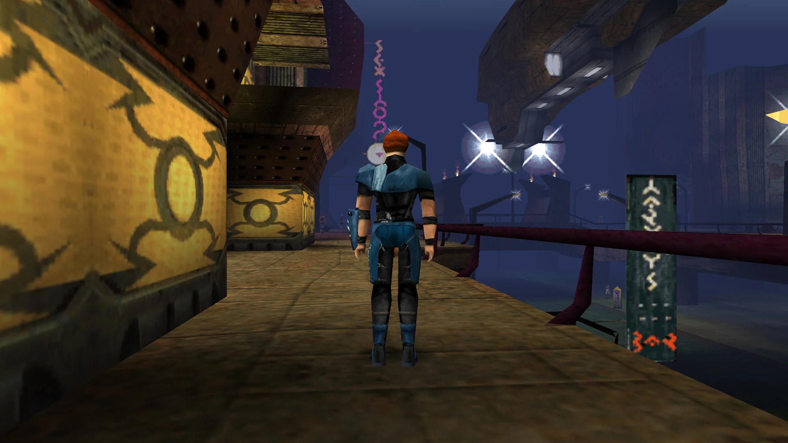
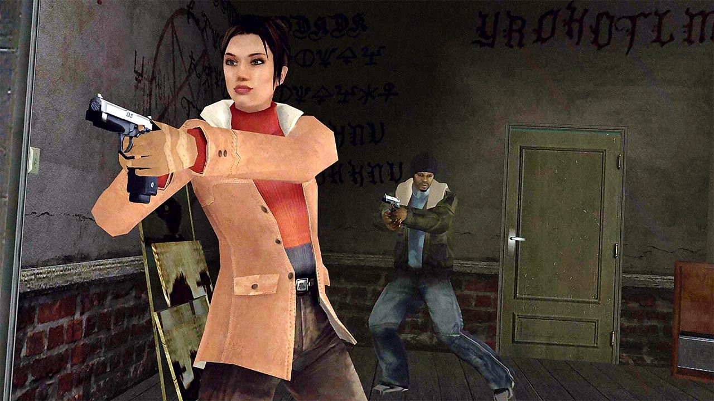
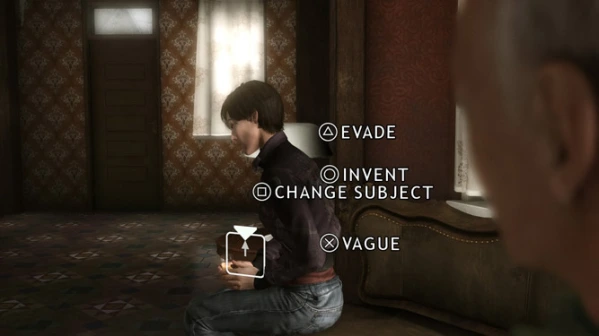
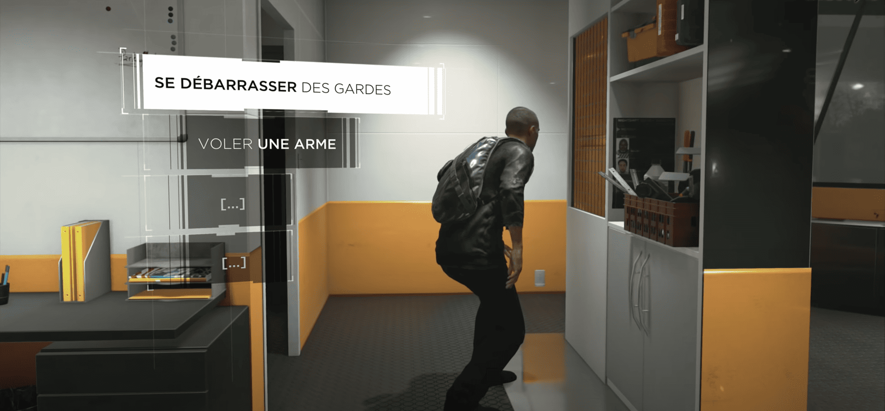

Sortie en 1999 sur Windows et porté en 2000 sur Dreamcast, The Nomad Souls est le premier jeu développé par Quantic Dream. C'est un jeu d'action-aventure dans lequel l'aspect narrative a une place importante. De par son originalité et l'importance aporté à l'aspect artistique (musique, narration), The Nomad Souls installe Quantic Dream dans le paysage vidéoludique français.
Jeux développé par Quantic Dreams

Plateformes : Windows, Dreamcast
Genre : Action-Aventure
Image de gameplay du jeu The Nomad Soul
Éditeur :Plateformes : Windows, Dreamcast
Genre : Action-Aventure
Toujours réalisé par David Cage, Fahrenheit est publié par Atari et publié en 2005. Classé dans la catégorie des jeux d'aventures, l'aspect narratif est là encore au cœur du jeu, mais cette fois-ci une attention particulière est apporté à la mise en scène. Il y a aussi un aspect psychologique, en effet la santé mentale du personnage a un impact sur le gameplay.

Plateformes : PlayStation 2, Windows, Xbox, PlayStation 4, iOS, Mac, Linux
Genre : Aventure
Image de gameplay du jeu Fahreneit
Éditeur : AtariPlateformes : PlayStation 2, Windows, Xbox, PlayStation 4, iOS, Mac, Linux
Genre : Aventure
Suite à la sortie Fahreneit, le studio a pris son temps et a travaillé sur plusieurs projets techniques. C'est donc après 3 ans de développement que sortira Heavy Rain. Faisant partie de la catégorie des films interactifs, la narration et l'immersion est plus que jamais au cœur du jeu.

Plateformes : PlayStation 3, PlayStation 4, Windows
Genre : Film interactif
Image de gameplay du jeu Heavy Rain
Éditeur : Sony Computer EntertainmentPlateformes : PlayStation 3, PlayStation 4, Windows
Genre : Film interactif
Les succès précédant conforte Quantic Dream dans une position de leader dans le domaine des jeux narratifs et leur permettent notamment d’engager les célèbres acteurs Elliot Page et Willem Dafoe pour le nouveau jeu Beyond : Two Souls sortie en 2013 sur Playstation 3. Dans ce jeu, Quantic Dream continue d’exceller au niveau de la narration et raconte l’histoire sombre d’une jeune femme possédant des pouvoirs surnaturels.

Image de gameplay du jeu Beyond : Two Souls
Éditeur : Sony Computer EntertainmentPlateformes : PlayStation 3, PlayStation 4, Windows
Genre : Film interactif, Action-Aventure
C’est un jeu de science-fiction et action-aventure qui se déroule dans un univers ou les robots humanoïdes partagent le quotidien des êtres humains en étant à leurs services. Quantic Dream a su utiliser l’expérience acquise durant les précédents développements pour produire ce jeu à embranchements narratifs dans lequel l’histoire poignante à su marquer l’esprit des joueurs.

Plateformes : PlayStation 4, Windows
Genre : Action-Aventure, Science-Fiction
Image de gameplay du jeu Detroit : Become Human
Éditeur : Sony Computer EntertainmentPlateformes : PlayStation 4, Windows
Genre : Action-Aventure, Science-Fiction